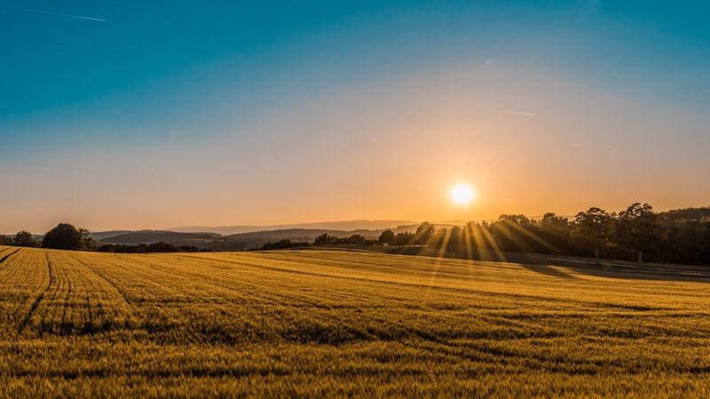
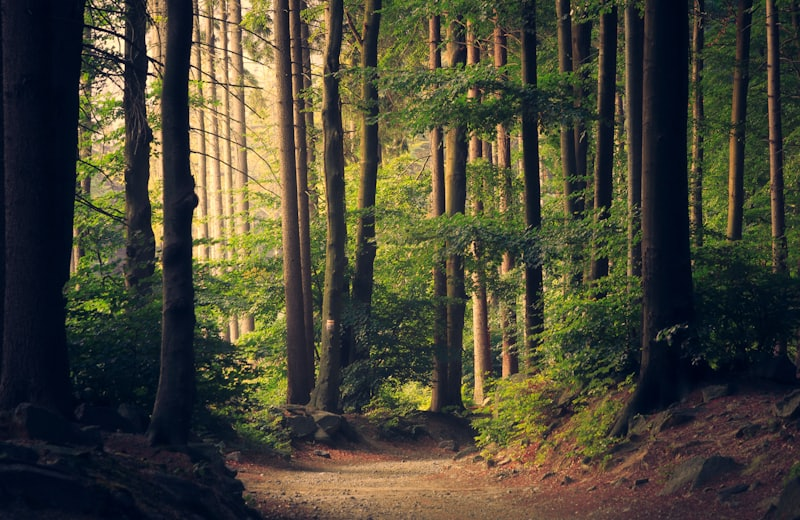
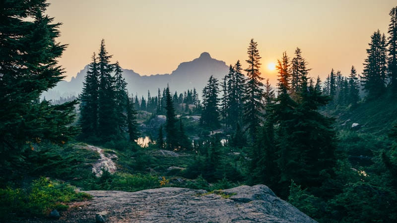
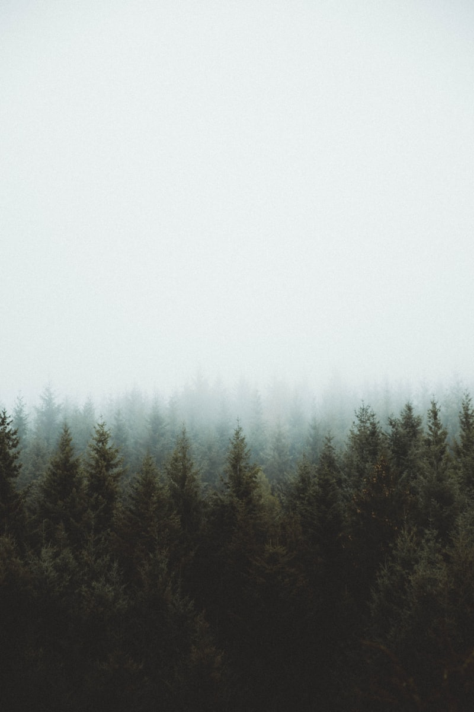
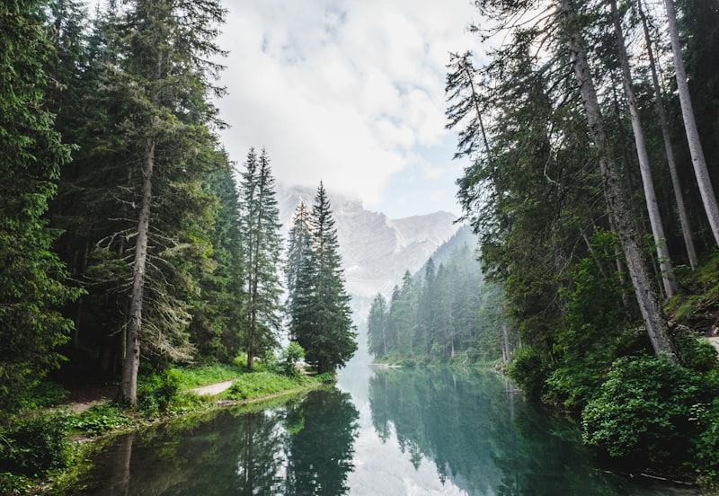

Equatorial
Amazônia
O maior domínio do Brasil. Caracterizado por clima quente e úmido, floresta latifoliada e a maior rede hidrográfica do mundo. Essencial para o equilíbrio climático global.

Nesta aula, exploramos os grandes domínios morfoclimáticos do Brasil, um conceito criado pelo geógrafo Aziz Ab'Sáber. Não falamos apenas de plantas, mas de como o relevo, o clima e a vegetação se unem para criar paisagens únicas — da exuberância da Amazônia à resistência da Caatinga. No ENEM, entender as características de cada bioma e os riscos que eles correm é fundamental.

A riqueza natural em diferentes formas.

O maior domínio do Brasil. Caracterizado por clima quente e úmido, floresta latifoliada e a maior rede hidrográfica do mundo. Essencial para o equilíbrio climático global.

Considerado a "savana brasileira". Possui árvores de troncos retorcidos e solos ácidos. É o berço das águas do Brasil, alimentando várias bacias hidrográficas.

O único bioma exclusivamente brasileiro. Adaptado à escassez de água, com plantas xerófitas (como cactos). Atualmente, é um dos mais vulneráveis à desertificação.
Os ecossistemas refletem fielmente as variáveis abióticas onde se instalam: Clima e relevo. Aziz Ab'Saber teorizou os Domínios Morfoclimáticos no Brasil (interação Relevo+Clima+Vegetação). Encontramos desde a densa floresta latifoliada Equatorial da Amazônia, até a resistência xerófila da Caatinga que perde suas folhas na seca; o Cerrado e seus arbustos tropicais retorcidos na estação invernal seca; Araucárias no clima subtropical temperado com sua mata de coníferas e os Pampas de herbáceas nos relevos suaves do Sul.
Cristovam Buarque Fui questionado sobre o que pensava da internacionalização da Amazônia, durante um debate, nos Estados Unidos. O jovem introduziu sua pergunta dizendo que esperava a resposta de um humanista e não de um brasileiro. Foi a primeira vez que um debatedor determinou a ótica humanista como o ponto de partida para uma resposta minha. De fato, como brasileiro eu simplesmente falaria contra a internacionalização da Amazônia. Por mais que nossos governos não tenham o devido cuidado com esse patrimônio, ele é nosso. Respondi que, como humanista, sentindo o risco da degradação ambiental que sofre a Amazônia, podia imaginar a sua internacionalização, como também de tudo o mais que tem importância para a humanidade.
Se a Amazônia, sob uma ótica humanista, deve ser internacionalizada, internacionalizemos também as reservas de petróleo do mundo inteiro. O petróleo é tão importante para o bem-estar da humanidade quanto a Amazônia é para o nosso futuro. Apesar disso, os donos das reservas sentem-se no direito de aumentar ou diminuir a extração de petróleo e subir ou não o seu preço. Os ricos do mundo, no direito de queimar esse imenso patrimônio da humanidade.
Da mesma forma, o capital financeiro dos países ricos deveria ser internacionalizado. Se a Amazônia é uma reserva para todos os seres humanos, ela não pode ser queimada pela vontade de um dono, ou de um país.
Queimar a Amazônia é tão grave quanto o desemprego provocado pelas decisões arbitrárias dos especuladores globais. Não podemos deixar que as reservas financeiras sirvam para queimar países inteiros na volúpia da especulação.
Antes mesmo da Amazônia, eu gostaria de ver a internacionalização de todos os grandes museus do mundo. O Louvre não deve pertencer apenas à França. Cada museu do mundo é guardião das mais belas peças produzidas pelo gênio humano. Não se pode deixar que esse patrimônio cultural, como o patrimônio natural amazônico, possa ser manipulado e destruído pelo gosto de um proprietário ou de um país. Não faz muito, um milionário japonês decidiu enterrar com ele um quadro de um grande mestre. Antes disso, aquele quadro deveria ter sido internacionalizado.
Durante o encontro em que recebi a pergunta, as Nações Unidas reuniam o Fórum do Milênio, mas alguns presidentes de países tiveram dificuldades em com- Geografia parecer por constrangimentos na fronteira dos EUA. Por isso, eu disse que Nova York, como sede das Nações Unidas, deveria ser internacionalizada.
Pelo menos Manhattan deveria pertencer a toda a humanidade. Assim como Paris, Veneza, Roma, Londres, Rio de Janeiro, Brasília, Recife, cada cidade, com sua beleza específica, sua história do mundo, deveria pertencer ao mundo inteiro. Se os EUA querem internacionalizar a Amazônia, pelo risco de deixá-la nas mãos de brasileiros, internacionalizemos todos os arsenais nucleares dos EUA. Até porque eles já demonstraram que são capazes de usar essas armas, provocando uma destruição milhares de vezes maior do que as lamentáveis queimadas feitas nas florestas do Brasil.
Nos seus debates, os atuais candidatos à presidência dos EUA têm defendido a idéia de internacionalizar as reservas florestais do mundo em troca da dívida. Comecemos usando essa dívida para garantir que cada criança do mundo tenha possibilidade de ir à escola.
Internacionalizemos as crianças tratando-as, todas elas, não importando o país onde nasceram, como patrimônio que merece cuidados do mundo inteiro. Ainda mais do que merece a Amazônia. Quando os dirigentes tratarem as crianças pobres do mundo como um patrimônio da humanidade, eles não deixarão que elas trabalhem quando deveriam estudar; que morram quando deveriam viver.
Como humanista, aceito defender a internacionalização do mundo. Mas, enquanto o mundo me tratar como brasileiro, lutarei para que a Amazônia seja nossa. Só nossa.
Fonte: JORNAL O GLOBO, 10 out. 2000. Disponível em:
Sugestão de Leitura AB'SABER, Aziz Nacib. Os domínios de natureza no Brasil: potencialidades paisagísticas. São Paulo: Ateliê Editorial, 2003.
LEITE, Marcelo. Brasil: paisagens naturais. São Paulo: Ática, 2007.
Sugestão de Vídeo AMAZÔNIA em chamas. Direção de John Frakenheimer. EUA, 1994. Duração: 123 min.
NEGRO carvão. Direção de Joanatha Moreira, Francila Calica e Luiz Felipe Fernandes. Brasil, 2004. Duração: 20 min.